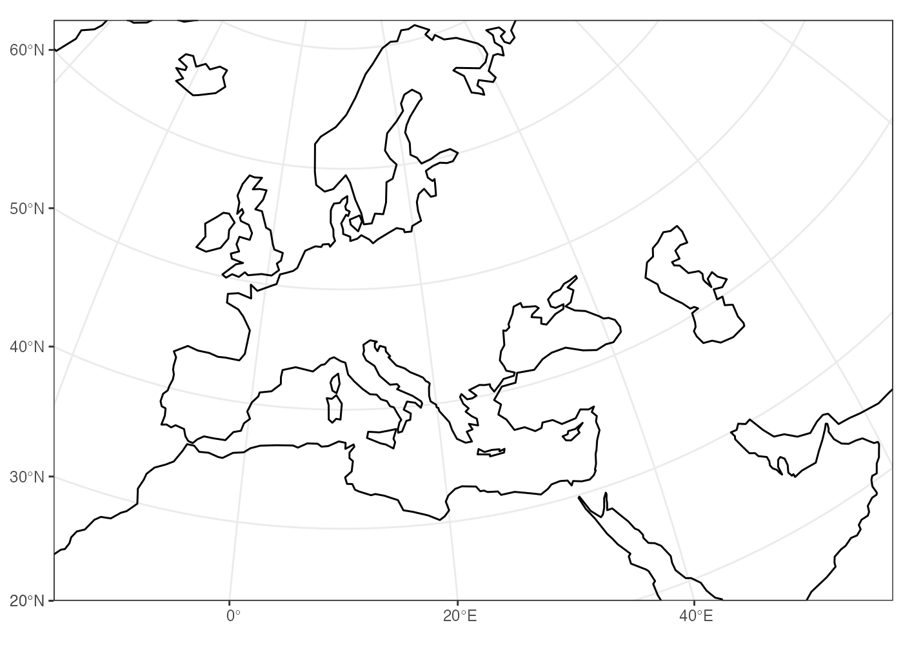
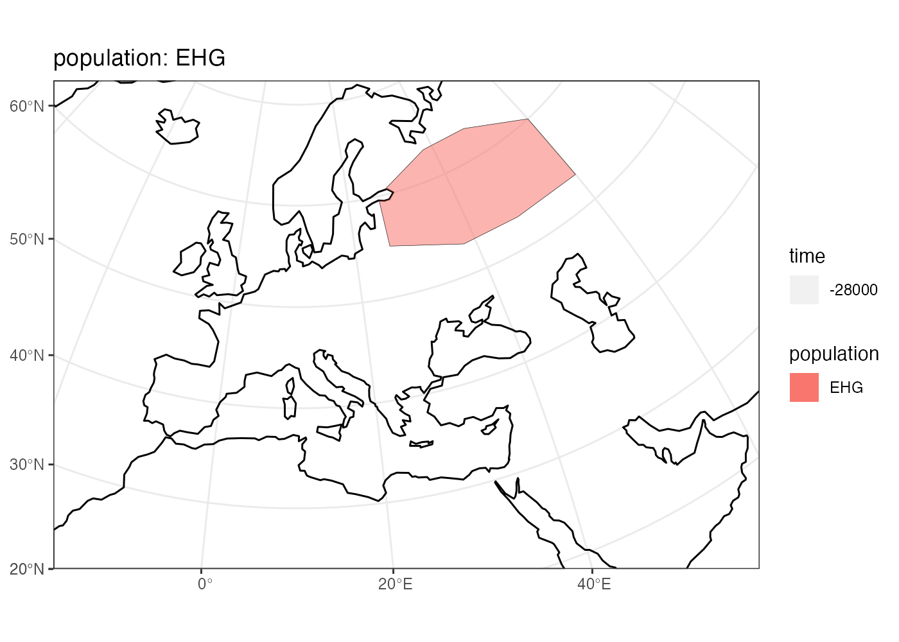
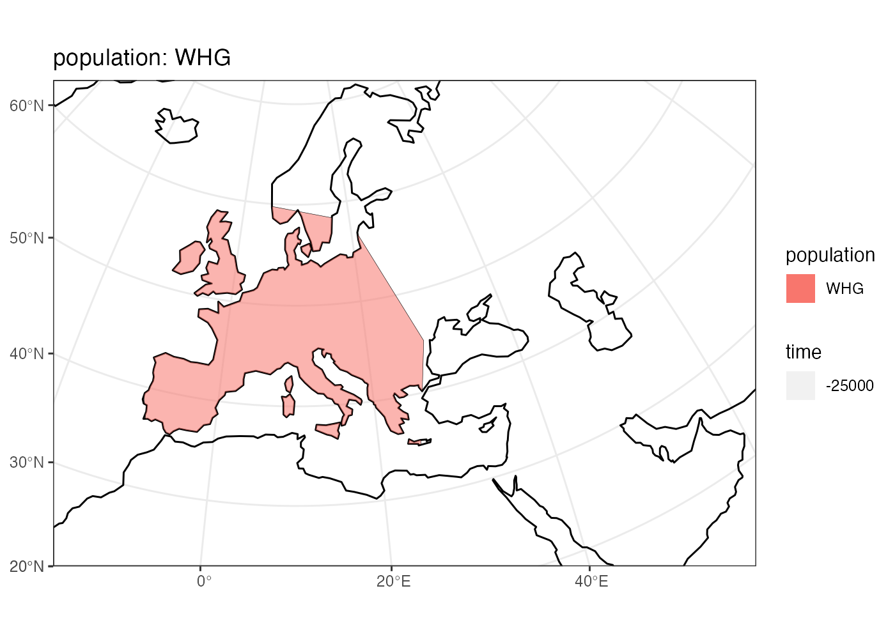
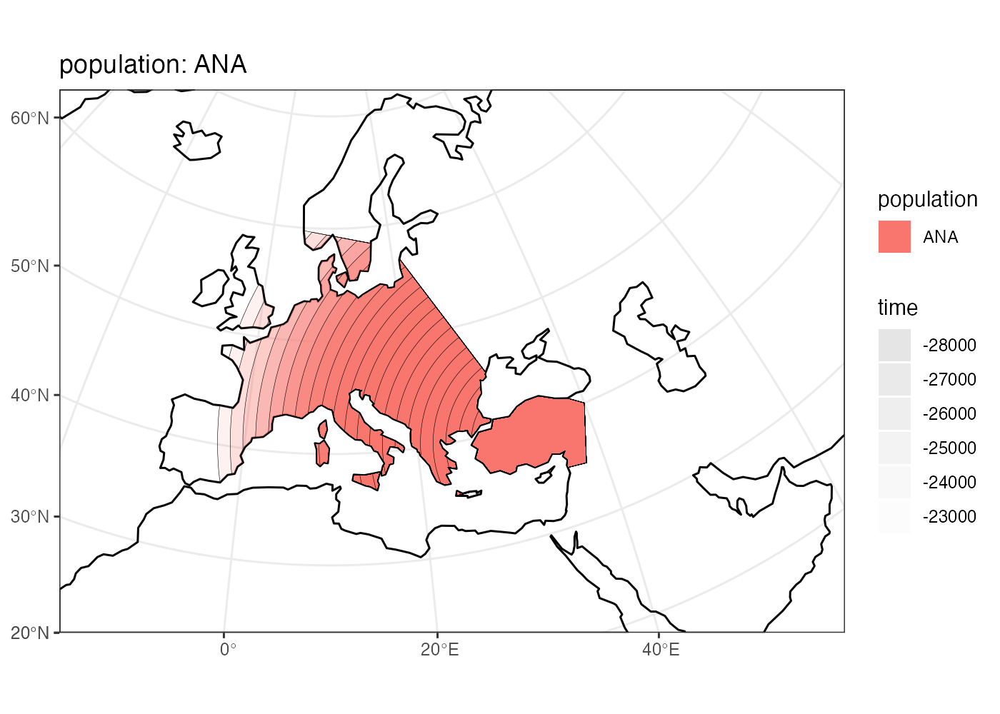
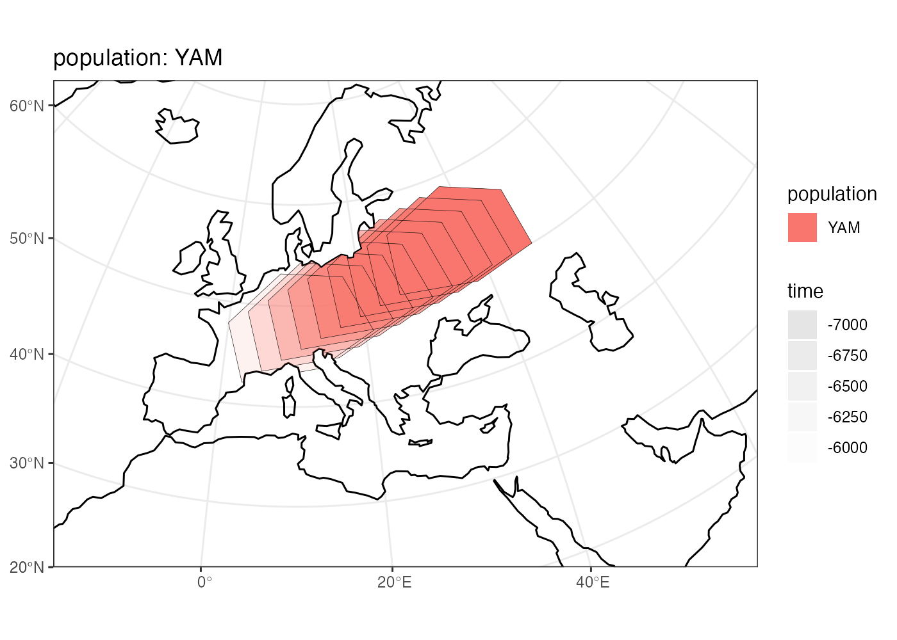
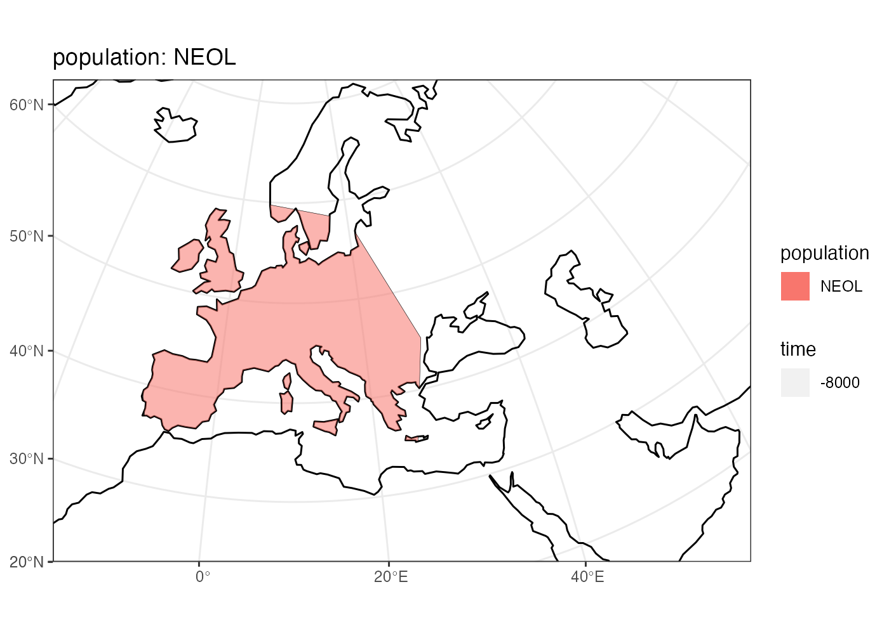

Full example of a spatial model definition and compilation
example.Rmd
library(spammr)Define the world context
world <- world_map(
lon_range = c(-15, 60), # min-max longitude
lat_range = c(20, 65), # min-max latitude
crs = "EPSG:3035" # real projected CRS used internally
)
#> OGR data source with driver: ESRI Shapefile
#> Source: "/private/var/folders/hr/_t1b0f5n7c76yrfsg8yk9l100000gn/T/RtmpLC49ZV", layer: "ne_110m_land"
#> with 127 features
#> It has 3 fields
plot(world)
Define some useful geographic regions
africa <- region(
"Africa", world,
coords = list(
c(-18, 20), c(40, 20), c(30, 33),
c(20, 32), c(10, 35), c(-8, 35)
)
)
europe_anatolia <-region(
"Western Europe & Anatolia", world,
coords = list(c(-10, 35), c(-5, 35), c(10, 38), c(20, 35), c(38, 35),
c(40, 40), c(30, 45), c(20, 58), c(-5, 60), c(-15, 50))
)
europe <- region(
"Western Europe", world,
coords = list(c(-8, 35), c(-5, 36), c(10, 38), c(20, 35), c(25, 35),
c(28, 45), c(20, 58), c(-5, 60), c(-15, 50))
)
anatolia <- region(
"Anatolia", world,
coords = list(c(28, 35), c(40, 35), c(42, 40),
c(30, 43), c(27, 40), c(25, 38))
)Define population splits and spatial ranges
afr <- population(
"AFR", parent = "ancestor", Ne = 1000,
world = world, region = africa
)
plot(afr)
ooa <- population(
"OOA", parent = afr, time = 65000, Ne = 200,
center = c(30, 30), radius = 300, remove = 27000
) %>% migrate(
trajectory = list(c(40, 30), c(50, 30), c(60, 40), c(70, 40)),
duration = 10000,
snapshots = 50
)
plot(ooa)
ehg <- population(
"EHG", time = 28000, Ne = 400, parent = ooa,
world,
coords = list(
c(26, 55), c(38, 53), c(48, 53), c(60, 53),
c(60, 60), c(48, 63), c(38, 63), c(26, 60)
),
remove = 6000
)
plot(ehg)
whg <- population(
name = "WHG", time = 25000, Ne = 300, parent = ehg,
world, region = europe, remove = 7000,
)
plot(whg)
ana <- population(
name = "ANA", time = 28000, Ne = 800, parent = ooa,
world, center = c(34, 38), radius = 700,
region = anatolia, remove = 7000
) %>% expand(
by = 2500,
duration = 5000,
snapshots = 20,
region = europe_anatolia
)
plot(ana)
yam <- population(
name = "YAM", time = 7000, Ne = 600, parent = ehg,
world,
coords = list(
c(26, 50), c(38, 49), c(48, 50),
c(48, 56), c(38, 59), c(26, 56)
)
) %>%
migrate(
trajectory = c(10, 48), # migrate to this point
duration = 1000, # how many years does the migration take?
snapshots = 8 # how many intermediate maps should be saved?
)
plot(yam)
neol <- population(
name= "NEOL", time = 8000, Ne = 1000, parent = whg,
world, region = europe
)
plot(neol)
Complete model of spatial boundaries
plot(afr, ooa, ehg, whg, ana, yam, neol)
Compile all maps in a bitmap rasterized form
compile(
afr, ooa, ehg, whg, ana, yam, neol,
output_dir = "model/",
overwrite = TRUE
)
run_slimgui(model_dir = "model/", gen_time = 30, burnin = 200)
unlink("model/", recursive = TRUE, force = TRUE)